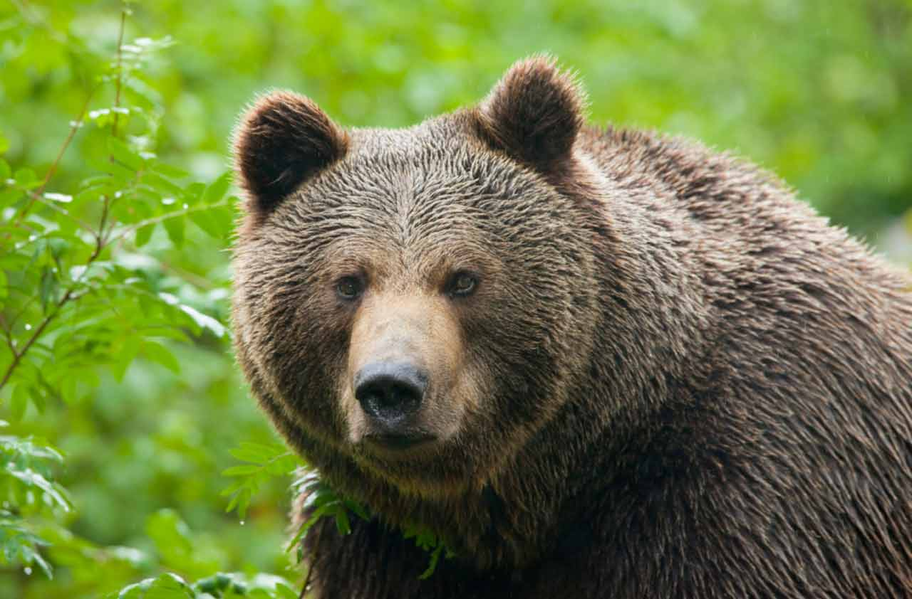

Zestrzeliwanie samolotów
To była animacja ruchomych piłeczek, którą należało przerobić na latające samoloty, a także dodać wiele modyfikacji, np. ustawić tak, żeby samolot zawsze leciał do przodu (albo do tyłu, jeżeli zdjęcie jest odwrócone).
Strona, na którą będę wrzucał wszystkie swoje zadania z HTML, CSS, JS i Php
i może coś jeszcze...

To była animacja ruchomych piłeczek, którą należało przerobić na latające samoloty, a także dodać wiele modyfikacji, np. ustawić tak, żeby samolot zawsze leciał do przodu (albo do tyłu, jeżeli zdjęcie jest odwrócone).

Polega na ułożeniu wszystkich kostek w kolejności numerycznej. To kolejne zadanie, które należało zmodyfikować.
Wciskając odpowiednie przyciski należy wygenerować liczbę, którą wylosował komputer. Gra posiada różne poziomy trudności.
Poniżej znajdują się odnośniki do niektórych projektów, które zrobiłem.
Po kliknięciu w to okienko przenisiesz się na moją drugą stronę.
Przejdź na stronę wydziału fizyki
Zobacz jeden z moich rysunków wykonanych jako grafika svg.
Ruszaj po ekranie okręgiem. Po kliknięciu w okrąg, on zniknie.
Prosty kalkulator, przy pomocy którego można sobie coś policzyć.
Kliknij, aby zobaczyć jak zrobiłem tabelkę, którą można sterować.
Tutaj zamieściłem galerię, która była jako zadanie domowe
